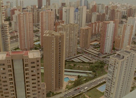

SueÑan los androides
Androids Dream
Ion de Sosa – Spain / Germany 2014
61 min – HD – Spanish OV Engl ST
Sc+DoP: Ion de Sosa, Jorge Gil Munarriz, Chema García Ibarra – E: Sergio Jiménez – SD: Manolo Marín – S: Jorge Alarcón, María José Molanes – P: Ion de Sosa, Luis López Carrasco, Luis Ferrón, Karsten Matern – With Manolo Marín, Moisés Richart, Marta Bassols
The year may be 2052, yet this is a future with one foot in the past. Between the strangely artificial skyscrapers along the coastline and the neon-lined broadwalk, there's nothing here to suggest it isn't still 1975, 1995 or 2015. Ion de Sosa's spare, enigmatic adaptation of Philip K. Dick's "Do Androids Dream of Electric Sheep?" is at once a minimalist genre piece, an oblique treatise on difference and an essayistic almost-documentary on the unreal status quo of contemporary Spain. And as the title suggests, these androids do indeed dream: of far-off places and new opportunities; of the songs of past summers; of a shared embrace, a sheep on a leash, as the towers and mountains open out beyond.
friday 9 oct 8.30 pm werkstattkino
Ion de Sosa born in San Sebastián, Spain, in 1981. He studied Cinematography at the Escuela de Cinematografía y del Audiovisual de la Comunidad de Madrid (ECAM). Since graduating, he has worked as a cinematographer, producer and director.
Films True Love 2011– Sueñan los androides 2014